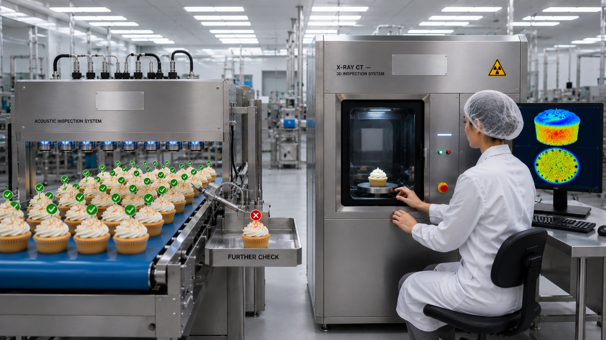
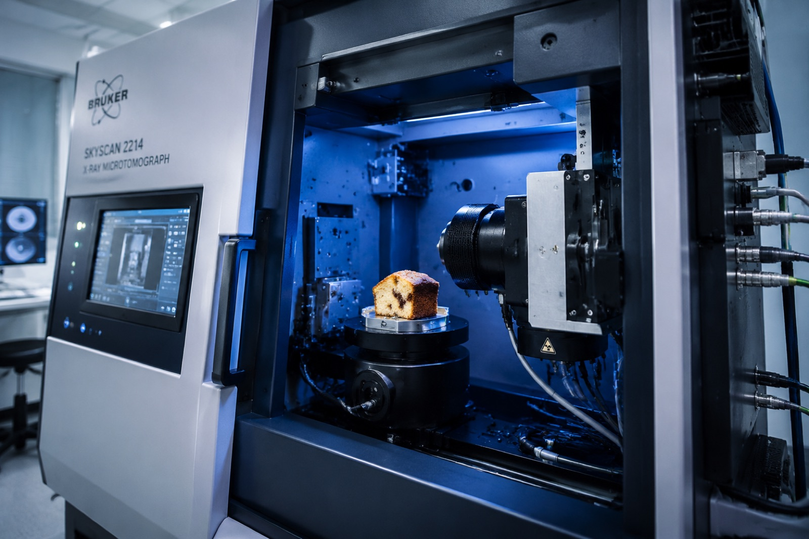

КТ-морфометрия пористости кондитерских изделий
Объективная карта пор и плотности изделия по компьютерной томограмме — без разрезания образца. Пористость, размер и распределение пор в цифрах, а не «на глаз».
Что измеряем
- Общая пористость, %
- Число пор и распределение по размерам
- Средний и максимальный диаметр пор
- Плотность и равномерность структуры
- Сравнение «до/после» изменения рецептуры

Неразрушающий контроль — два решения
ИНТРОСКАН даёт глубокую картину по образцу, ЭХОСКАН — сплошной контроль на линии. Вместе — полный цикл неразрушающего контроля, какого нет у конкурентов.
Когда это нужно
- ✓ Сравнить структуру до и после изменения рецептуры, разрыхлителя или режима выпечки
- ✓ Доказать равномерность пропекания и отсутствие пустот, закалов, непромесов
- ✓ Арбитраж по «воздушности», «пышности», «плотности» в споре о качестве
- ✓ Контроль стабильности структуры между партиями и площадками
Почему этот метод редкий
Метод реализован на приборной базе института совместно с собственным расчётным модулем морфометрии (сегментация Оцу, выделение пор, расчёт плотности) и опирается на научные публикации сотрудников ВНИИКП.

Полный модуль КТ-морфометрии — прямо на сайте
Это настоящий расчётный модуль института, а не упрощённое демо: загрузка стека срезов (PNG/TIFF/DICOM), сегментация Оцу, разделение слипшихся пор (watershed), пористость, гранулометрия, толщина стенок и плотность с калибровкой по вокселю.
Расчётный модуль КТ-морфометрии
Загрузите срез/стек или сгенерируйте демо внутри модуля → пористость, поры, плотность, отчёт
Что вы получите в отчёте
- Значение общей пористости и плотности изделия
- Гистограмму распределения пор по размерам
- Визуализацию структуры (срезы и 3D-карта пор)
- Интерпретацию технолога: что цифры значат для качества продукта